13. [课程]：使用 Spring MVC 在 Web 上公开数据库
关键词：多层架构、Spring、依赖注入、Web服务/JSON、客户端/服务器
13.1. 支持
 | 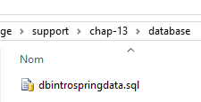 |
本章的项目位于 [support / chap-13] 文件夹中。SQL 脚本 [dbintrospringdata.sql] 用于创建测试所需的 MySQL 数据库。
13.2. Spring MVC 在 Web 应用程序中的作用
让我们将 Spring MVC 置于 Web 应用程序的开发背景中。通常，Web 应用程序会基于如下所示的多层架构构建：
 |
- [Web] 层是与 Web 应用程序用户直接交互的层。用户通过浏览器中显示的网页与 Web 应用程序进行交互。Spring MVC 位于该层，且仅位于该层；
- [业务]层实现应用程序的业务逻辑，例如计算工资或生成发票。该层通过[Web]层获取用户数据，并通过[DAO]层获取来自DBMS的数据；
- [DAO]（数据访问对象）层、[ORM]（对象关系映射器）层以及 JDBC 驱动程序负责管理对 DBMS 中数据的访问。[ORM] 层充当 [DAO] 层处理的对象与关系型数据库中表的行和列之间的桥梁。 JPA（Java Persistence API）规范允许对所使用的 ORM 进行抽象，前提是该 ORM 实现了这些规范。本例中即符合此情况，因此我们将 ORM 层统称为 JPA 层；
- 各层的集成由 Spring 框架负责；
13.3. Spring MVC 开发模型
Spring MVC 通过以下方式实现 MVC（模型-视图-控制器）架构模式：
 |
客户端请求的处理流程如下：
- 请求——请求的 URL 格式为 http://machine:port/contexte/Action/param1/param2/....?p1=v1&p2=v2&... [前端控制器] 通过配置文件或 Java 注解将请求“路由”到正确的控制器及其内部的正确操作。为此，它会使用 URL 中的 [Action] 字段。 URL 的其余部分 [/param1/param2/...] 由可选参数组成，这些参数将传递给操作。此处的 MVC 中的 C 指的是 [前端控制器、控制器、操作] 这一链条。如果没有控制器能处理所请求的操作，Web 服务器将响应称未找到所请求的 URL。
- 处理
- 选定的操作可以使用 [前置控制器] 传递给它的参数。这些参数可能来自以下几个来源：
- URL 的路径 [/param1/param2/...]，
- URL 的 [p1=v1&p2=v2] 参数，
- 浏览器随请求提交的参数；
- 在处理用户请求时，操作可能需要调用 [业务] 层 [2b]。一旦客户端的请求被处理完毕，可能会触发各种响应。一个典型的例子是：
- 若请求无法正确处理，则返回错误页面
- 否则则显示确认页面
- 操作会指示显示特定的视图 [3]。该视图将显示被称为视图模型的数据。这就是 MVC 中的 M。操作将创建这个 M 模型 [2c] 并指示显示 V 视图 [3]；
- 响应——选定的视图 V 使用操作生成的模型 M 来初始化其必须发送给客户端的 HTML 响应中的动态部分，然后发送该响应。
对于 Web 服务 / JSON，上述架构稍作修改：
 |
- 在 [4a] 中，模型（即一个 Java 类）通过 JSON 库转换为 JSON 字符串；
- 在 [4b] 中，该 JSON 字符串被发送至浏览器；
现在，让我们澄清 MVC Web 架构与分层架构之间的关系。根据模型的定义方式不同，这两个概念可能相关，也可能无关。考虑一个单层的 Spring MVC Web 应用程序：
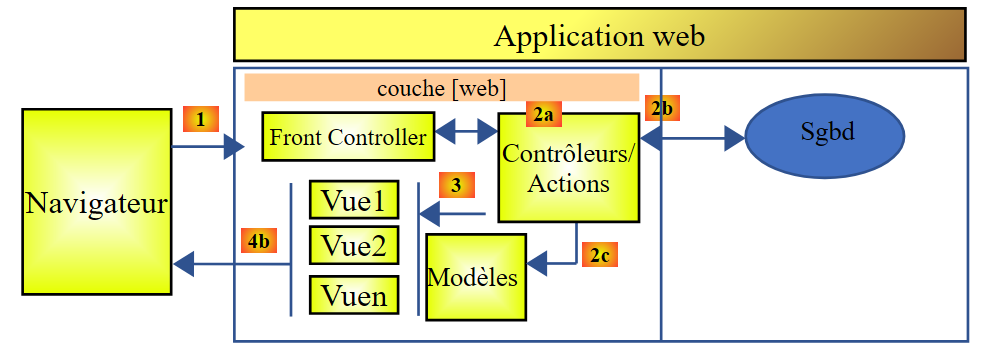 |
如果我们使用 Spring MVC 来实现 [Web] 层，那么我们确实拥有了 MVC Web 架构，但并非多层架构。在此情况下，[Web] 层将处理所有事务：呈现、业务逻辑和数据访问。具体而言，这些工作将由 Action 类来完成。
现在，让我们考虑一种多层Web架构：
 |
Web 层可以在不使用框架且不遵循 MVC 模式的情况下实现。在这种情况下，我们仍然拥有多层架构，但 Web 层并未实现 MVC 模式。
例如，在 .NET 环境中，上述 [Web] 层可通过 ASP.NET MVC 实现，从而形成一个具有 MVC 风格 [Web] 层的分层架构。不过，该 ASP.NET MVC 层可以替换为经典的 ASP.NET 层（WebForms），同时保持其余部分（业务逻辑、DAO、ORM）不变。 这样，我们就得到了一种分层架构，其 [Web] 层不再基于 MVC。
在 MVC 中，我们曾提到 M 模型即 V 视图所呈现的数据集。这里给出 MVC 中 M 模型的另一种定义：
 |
许多作者认为，位于 [Web] 层右侧的部分构成了 MVC 中的 M 模型。为避免歧义，我们可以将：
- 在提及[Web]层右侧的所有内容时，称之为领域模型
- 当指代视图 V 所显示的数据时，称之为视图模型
下文中，“M模型”一词将专指视图V的模型。
13.4. 基于 Spring MVC 的 Web/JSON 项目
网站 [http://spring.io/guides] 提供了入门教程，用于探索 Spring 生态系统。我们将参考其中一个教程，了解 Spring MVC 项目所需的 Maven 配置。
13.4.1. 演示项目
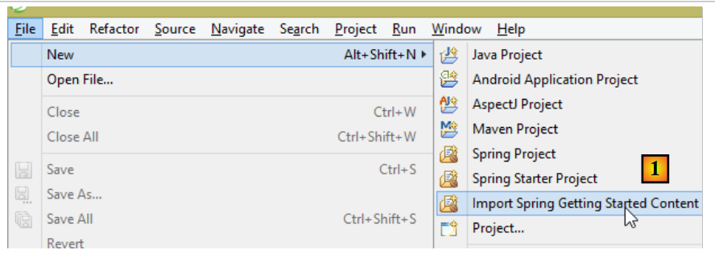 |
- 在[1]中，我们引入了Spring指南之一；
 |
- 在 [2] 中，我们选择 [Rest Service] 示例；
- 在 [3] 中，我们选择了 Maven 项目；
- 在 [4] 中，我们选择指南的最终版本；
- 在 [5] 中，我们确认；
- 在 [6] 中，导入项目；
可通过标准 URL 访问并返回 JSON 数据的 Web 服务通常被称为 REST（表征状态转移）服务。如果一个服务遵循某些规则，则被称为 RESTful 服务。
现在让我们来检查这个导入的项目，首先从它的 Maven 配置开始。
13.4.2. Maven 配置
<?xml version="1.0" encoding="UTF-8"?>
<project xmlns="http://maven.apache.org/POM/4.0.0" xmlns:xsi="http://www.w3.org/2001/XMLSchema-instance"
xsi:schemaLocation="http://maven.apache.org/POM/4.0.0 http://maven.apache.org/xsd/maven-4.0.0.xsd">
<modelVersion>4.0.0</modelVersion>
<groupId>org.springframework</groupId>
<artifactId>gs-rest-service</artifactId>
<version>0.1.0</version>
<parent>
<groupId>org.springframework.boot</groupId>
<artifactId>spring-boot-starter-parent</artifactId>
<version>1.2.2.RELEASE</version>
</parent>
<dependencies>
<dependency>
<groupId>org.springframework.boot</groupId>
<artifactId>spring-boot-starter-web</artifactId>
</dependency>
</dependencies>
<properties>
<start-class>hello.Application</start-class>
</properties>
<build>
<plugins>
<plugin>
<groupId>org.springframework.boot</groupId>
<artifactId>spring-boot-maven-plugin</artifactId>
</plugin>
</plugins>
</build>
<repositories>
<repository>
<id>spring-releases</id>
<url>https://repo.spring.io/libs-release</url>
</repository>
</repositories>
<pluginRepositories>
<pluginRepository>
<id>spring-releases</id>
<url>https://repo.spring.io/libs-release</url>
</pluginRepository>
</pluginRepositories>
</project>
- 第 6–8 行：Maven 项目属性。缺少一个指定 Maven 构建所生成文件类型的 [<packaging>] 标签。在缺少该标签的情况下，默认使用 [jar] 类型。因此，该应用程序是一个基于控制台的可执行应用程序，而非 Web 应用程序（如果是 Web 应用程序，则应使用 [war] 类型）；
- 第 10–14 行：该 Maven 项目有一个父项目 [spring-boot-starter-parent]。它定义了该项目的大部分依赖项。这些依赖项可能已足够（此时不会添加额外依赖），也可能不足（此时会添加缺失的依赖）；
- 第 17–20 行：[spring-boot-starter-web] 构建产物包含 Spring MVC Web 服务项目所需的库，该项目不生成视图。该构建产物包含大量库，其中包括用于嵌入式 Tomcat 服务器的库。应用程序将在该服务器上运行；
此配置中包含的库数量非常多：
 |  |
上图中，我们可以看到三个 Tomcat 服务器压缩包。
13.4.3. Spring [Web/JSON] 服务的架构
对于 Web/JSON 服务，Spring MVC 通过以下方式实现 MVC 模型：
 |
- 在 [4a] 中，模型（即一个 Java 类）通过 JSON 库被转换为 JSON 字符串；
- 在[4b]中，该JSON字符串被发送至浏览器；
13.4.4. C 控制器
 |
导入的应用程序包含以下控制器：
package hello;
import java.util.concurrent.atomic.AtomicLong;
import org.springframework.web.bind.annotation.RequestMapping;
import org.springframework.web.bind.annotation.RequestParam;
import org.springframework.web.bind.annotation.RestController;
@RestController
public class GreetingController {
private static final String template = "Hello, %s!";
private final AtomicLong counter = new AtomicLong();
@RequestMapping("/greeting")
public Greeting greeting(@RequestParam(value = "name", defaultValue = "World") String name) {
return new Greeting(counter.incrementAndGet(), String.format(template, name));
}
}
- 第 9 行：[@RestController] 注解将 [GreetingController] 类定义为 Spring 控制器，这意味着其方法已被注册以处理 URL。我们之前见过类似的 [@Controller] 注解。该控制器方法的返回类型是 [String]，即要显示的视图名称。而这里则有所不同。 [@RestController] 的方法返回的对象会被序列化后发送至浏览器。具体的序列化类型取决于 Spring MVC 的配置。在此处，它们将被序列化为 JSON。正是项目依赖中包含的 JSON 库，促使 Spring Boot 自动以这种方式配置项目；
- 第 14 行：[@RequestMapping] 注解指定了该方法处理的 URL，本例中为 [/greeting]；
- 第 15 行：我们已经解释过 [@RequestParam] 注解。该方法返回的结果是一个 [Greeting] 类型的对象。
- 第 12 行：一个原子类型的长整型。这意味着它支持并发访问。多个线程可能希望同时递增 [counter] 变量。系统将妥善处理这种情况。只有当当前正在修改计数器的线程完成修改后，其他线程才能读取计数器的值。
13.4.5. M 模型
前一种方法生成的 M 模型是以下 [Greeting] 对象：
 |
package hello;
public class Greeting {
private final long id;
private final String content;
public Greeting(long id, String content) {
this.id = id;
this.content = content;
}
public long getId() {
return id;
}
public String getContent() {
return content;
}
}
对该对象进行 JSON 转换后，将生成字符串 {"id":n,"content":"text"}。最终，控制器方法生成的 JSON 字符串将呈现为以下形式：
或
13.4.6. 执行
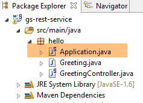 |
[Application.java] 类是该项目的可执行类。其代码如下：
package hello;
import org.springframework.boot.autoconfigure.EnableAutoConfiguration;
import org.springframework.boot.SpringApplication;
import org.springframework.context.annotation.ComponentScan;
@ComponentScan
@EnableAutoConfiguration
public class Application {
public static void main(String[] args) {
SpringApplication.run(Application.class, args);
}
}
我们在前面的示例中已经遇到并解释过这段代码。
13.4.7. 运行项目
 |
我们得到以下控制台日志：
- 第 13 行：Tomcat 服务器在端口 8080 上启动（第 12 行）；
- 第 17 行：存在 [DispatcherServlet] Servlet；
- 第 20 行：已发现方法 [GreetingController.greeting]；
要测试该 Web 应用程序，请访问 URL [http://localhost:8080/greeting]：
 |  |
我们收到了预期的 JSON 字符串。查看服务器发送的 HTTP 头部信息可能会很有趣。为此，我们将使用一个名为 [Advanced Rest Client] 的 Chrome 扩展程序（Chrome / Ctrl-T / [应用程序] 菜单 / [Advanced Rest Client]——参见附录第 22.5 段）：
 |
- 在 [1] 中，请求的 URL；
- 在 [2] 中，使用了 GET 方法；
- 在 [3] 中，JSON 响应；
- 在 [4] 中，服务器表明其将发送 JSON 格式的响应；
- 在 [5] 中，我们请求相同的 URL，但这次使用 POST 请求；
- 在 [7] 中，信息以 [urlencoded] 格式发送至服务器；
- 在 [6] 中，"name" 参数及其值；
- 在 [8] 中，浏览器告知服务器将发送 [urlencoded] 格式的数据；
- 在 [9] 中，服务器的 JSON 响应；
13.4.8. 创建可执行归档文件
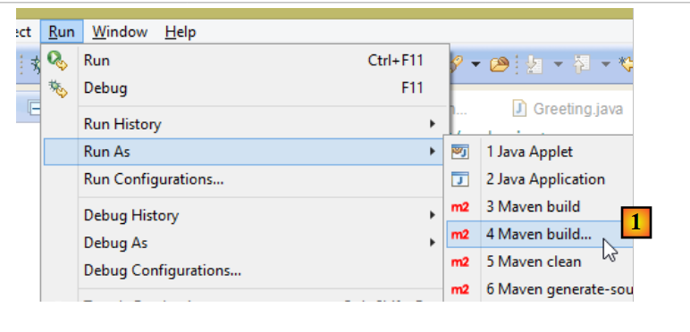 |
 |
- 在 [1] 中：我们运行一个 Maven 目标；
- 在 [2] 中：有两个目标：[clean] 用于从 Maven 项目中删除 [target] 文件夹，[package] 用于重新生成该文件夹；
- 在 [3] 中：生成的 [target] 文件夹将位于此文件夹中；
- 在 [4] 中：我们生成 target；
在控制台显示的日志中，请务必留意 [spring-boot-maven-plugin] 插件。该插件负责生成可执行归档文件。
使用控制台，导航至生成的文件夹：
D:\Temp\wksSTS\gs-rest-service\target>dir
...
11/06/2014 15:30 <DIR> classes
11/06/2014 15:30 <DIR> generated-sources
11/06/2014 15:30 11 073 572 gs-rest-service-0.1.0.jar
11/06/2014 15:30 3 690 gs-rest-service-0.1.0.jar.original
11/06/2014 15:30 <DIR> maven-archiver
11/06/2014 15:30 <DIR> maven-status
...
- 第 5 行：生成的归档文件；
该归档文件的执行方式如下：
D:\Temp\wksSTS\gs-rest-service-complete\target>java -jar gs-rest-service-0.1.0.jar
. ____ _ __ _ _
/\\ / ___'_ __ _ _(_)_ __ __ _ \ \ \ \
( ( )\___ | '_ | '_| | '_ \/ _` | \ \ \ \
\\/ ___)| |_)| | | | | || (_| | ) ) ) )
' |____| .__|_| |_|_| |_\__, | / / / /
=========|_|==============|___/=/_/_/_/
:: Spring Boot :: (v1.1.0.RELEASE)
2014-06-11 15:32:47.088 INFO 4972 --- [ main] hello.Application
: Starting Application on Gportpers3 with PID 4972 (D:\Temp\wk
sSTS\gs-rest-service-complete\target\gs-rest-service-0.1.0.jar started by ST in
D:\Temp\wksSTS\gs-rest-service-complete\target)
...
现在 Web 应用程序已运行，您可以通过浏览器访问它：
 |
13.4.9. 在 Tomcat 服务器上部署应用程序
与上一个项目一样，我们将 [pom.xml] 文件修改如下：
<?xml version="1.0" encoding="UTF-8"?>
<project xmlns="http://maven.apache.org/POM/4.0.0" xmlns:xsi="http://www.w3.org/2001/XMLSchema-instance"
xsi:schemaLocation="http://maven.apache.org/POM/4.0.0 http://maven.apache.org/xsd/maven-4.0.0.xsd">
<modelVersion>4.0.0</modelVersion>
<groupId>org.springframework</groupId>
<artifactId>gs-rest-service</artifactId>
<version>0.1.0</version>
<packaging>war</packaging>
...
</project>
- 第 9 行：您必须指定将生成一个 WAR（Web Archive）文件；
还必须配置 Web 应用程序。如果没有 [web.xml] 文件，则通过继承 [SpringBootServletInitializer] 的类来完成此配置：
 |
[ApplicationInitializer] 类的定义如下：
package hello;
import org.springframework.boot.builder.SpringApplicationBuilder;
import org.springframework.boot.context.web.SpringBootServletInitializer;
public class ApplicationInitializer extends SpringBootServletInitializer {
@Override
protected SpringApplicationBuilder configure(SpringApplicationBuilder application) {
return application.sources(Application.class);
}
}
- 第 6 行：[ApplicationInitializer] 类继承自 [SpringBootServletInitializer] 类；
- 第 9 行：重写了 [configure] 方法（第 8 行）；
- 第 10 行：提供了用于配置该项目的类；
要运行该项目，请按以下步骤操作：
 |
- 在 [1-2] 中，在 Eclipse IDE 中注册的某台服务器上运行该项目；
完成上述操作后，您可以在浏览器中访问 URL [http://localhost:8080/gs-rest-service/greeting/?name=Mitchell]：
 |
13.4.10. 结论
我们已经介绍了一种 Spring MVC 项目，其中 Web 应用程序会向浏览器发送 JSON 数据流。接下来，我们将开发一个 Web/JSON 应用程序，以便在 Web 上公开 [Spring Data 入门] 教程中研究的 [dbintrospringdata] 数据库。
13.5. 在 Web 上公开 [dbintrospringdata] 数据库
13.5.1. Web/JSON 服务架构
我们将实现以下架构：
 |
[DAO] 和 [JPA] 层由 [Spring Data 入门] 教程中编写的应用程序实现。
13.5.2. 安装数据库
 |
SQL 脚本 [dbintrospringdata.sql] 将创建测试所需的 MySQL 数据库。
13.5.3. Web 服务 / JSON 的 Eclipse 项目
Web 服务/JSON 的 Eclipse 项目如下：
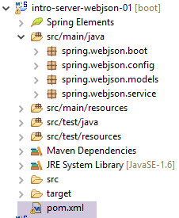 |
这是一个 Maven 项目，其 [pom.xml] 文件如下：
<project xmlns="http://maven.apache.org/POM/4.0.0" xmlns:xsi="http://www.w3.org/2001/XMLSchema-instance"
xsi:schemaLocation="http://maven.apache.org/POM/4.0.0 http://maven.apache.org/xsd/maven-4.0.0.xsd">
<modelVersion>4.0.0</modelVersion>
<groupId>istia.st.webjson</groupId>
<artifactId>intro-server-webjson01</artifactId>
<version>0.0.1-SNAPSHOT</version>
<name>intro-server-webjson01</name>
<description>démo spring mvc</description>
<parent>
<groupId>org.springframework.boot</groupId>
<artifactId>spring-boot-starter-parent</artifactId>
<version>1.2.7.RELEASE</version>
</parent>
<dependencies>
<dependency>
<groupId>istia.st.springdata</groupId>
<artifactId>intro-spring-data-01</artifactId>
<version>0.0.1-SNAPSHOT</version>
</dependency>
<dependency>
<groupId>org.springframework.boot</groupId>
<artifactId>spring-boot-starter-web</artifactId>
</dependency>
<dependency>
<groupId>org.springframework.boot</groupId>
<artifactId>spring-boot-starter</artifactId>
</dependency>
</dependencies>
<build>
<plugins>
<plugin>
<groupId>org.springframework.boot</groupId>
<artifactId>spring-boot-maven-plugin</artifactId>
</plugin>
<plugin>
<groupId>org.apache.maven.plugins</groupId>
<artifactId>maven-surefire-plugin</artifactId>
<version>2.18.1</version>
</plugin>
</plugins>
</build>
</project>
- 第 11–15 行：已用于 [DAO] 层的父 Maven 项目；
- 第 18–22 行：对 [DAO] 层的依赖；
- 第 23–26 行：对 [spring-boot-starter-web] 工件的依赖。该工件包含创建 Web/JSON 服务所需的所有依赖项，但也包含了一些不必要的库。因此，需要进行更精确的配置。不过，此配置对于入门非常有用；
- 第 28–30 行：对 [spring-boot-starter] 工件的依赖，可让您管理 Spring Boot 注解；
此配置引入的依赖项如下：
 |
- 在 [1] 中，我们可以看到 Eclipse 已检测到对项目归档 [intro-spring-data-01] 的依赖；
上述依赖关系同时属于 [DAO] 层和 [web] 层。
13.5.3.1. [web]层的配置
[web] 层的配置通过 [AppConfig] 文件进行：
 |
[WebConfig] 类用于配置 [web] 层：
package spring.webjson.config;
import org.springframework.beans.factory.annotation.Autowired;
import org.springframework.boot.context.embedded.EmbeddedServletContainerFactory;
import org.springframework.boot.context.embedded.ServletRegistrationBean;
import org.springframework.boot.context.embedded.tomcat.TomcatEmbeddedServletContainerFactory;
import org.springframework.context.ApplicationContext;
import org.springframework.context.annotation.Bean;
import org.springframework.web.context.WebApplicationContext;
import org.springframework.web.servlet.DispatcherServlet;
import org.springframework.web.servlet.config.annotation.EnableWebMvc;
import org.springframework.web.servlet.config.annotation.WebMvcConfigurerAdapter;
import com.fasterxml.jackson.databind.ObjectMapper;
import com.fasterxml.jackson.databind.ser.impl.SimpleBeanPropertyFilter;
import com.fasterxml.jackson.databind.ser.impl.SimpleFilterProvider;
@EnableWebMvc
public class WebConfig extends WebMvcConfigurerAdapter {
// -------------------------------- layer configuration [web]
@Autowired
private ApplicationContext context;
@Bean
public DispatcherServlet dispatcherServlet() {
DispatcherServlet servlet = new DispatcherServlet((WebApplicationContext) context);
return servlet;
}
@Bean
public ServletRegistrationBean servletRegistrationBean(DispatcherServlet dispatcherServlet) {
return new ServletRegistrationBean(dispatcherServlet, "/*");
}
@Bean
public EmbeddedServletContainerFactory embeddedServletContainerFactory() {
return new TomcatEmbeddedServletContainerFactory("", 8080);
}
// filters jSON
@Bean(name = "jsonMapper")
public ObjectMapper jsonMapper() {
return new ObjectMapper();
}
@Bean(name = "jsonMapperCategorieWithProduits")
public ObjectMapper jsonMapperCategorieWithProduits() {
// mapper jSON
ObjectMapper mapper = new ObjectMapper();
// filters
mapper.setFilters(
new SimpleFilterProvider().addFilter("jsonFilterCategorie", SimpleBeanPropertyFilter.serializeAllExcept())
.addFilter("jsonFilterProduit", SimpleBeanPropertyFilter.serializeAllExcept("categorie")));
// result
return mapper;
}
@Bean(name = "jsonMapperProduitWithCategorie")
public ObjectMapper jsonMapperProduitWithCategorie() {
// mapper jSON
ObjectMapper mapper = new ObjectMapper();
// filters
mapper.setFilters(
new SimpleFilterProvider().addFilter("jsonFilterProduit", SimpleBeanPropertyFilter.serializeAllExcept())
.addFilter("jsonFilterCategorie", SimpleBeanPropertyFilter.serializeAllExcept("produits")));
// result
return mapper;
}
@Bean(name = "jsonMapperCategorieWithoutProduits")
public ObjectMapper jsonMapperCategorieWithoutProduits() {
// mapper jSON
ObjectMapper mapper = new ObjectMapper();
// filters
mapper.setFilters(new SimpleFilterProvider().addFilter("jsonFilterCategorie",
SimpleBeanPropertyFilter.serializeAllExcept("produits")));
// result
return mapper;
}
@Bean(name = "jsonMapperProduitWithoutCategorie")
public ObjectMapper jsonMapperProduitWithoutCategorie() {
// mapper jSON
ObjectMapper mapper = new ObjectMapper();
// filters
mapper.setFilters(new SimpleFilterProvider().addFilter("jsonFilterProduit",
SimpleBeanPropertyFilter.serializeAllExcept("categorie")));
// result
return mapper;
}
}
- 第 18 行：[@EnableWebMvc] 注解会触发 Spring MVC 框架的自动配置；
- 第 19 行：[WebConfig] 类继承了 Spring 的 [WebMvcConfigurerAdapter] 类，以重新定义某些 Bean（第 26–40 行）；
- 第 22–23 行：注入 Spring 上下文；
- 第 25–29 行：定义 Spring MVC 框架的 Servlet，用于将 HTTP 请求路由到正确的控制器和方法。[DispatcherServlet] 是 Spring 类；
- 第 31–34 行：我们指定该 Servlet 处理所有 URL；
- 第 36–39 行：该 Bean 的存在将激活项目归档中包含的 Tomcat 服务器。它将在 8080 端口监听请求；
- 第 42–91 行：用于管理 JSON 过滤器的 Bean；
- 第 42–45 行：一个不带过滤器的 JSON 映射器；
- 第 47–57 行：允许同时检索类别及其产品的 JSON 映射器。请注意，当请求包含产品的类别时，必须同时配置 [Category] 类和 [Product] 类的 JSON 过滤器。这种情况始终存在。在将类序列化/反序列化为 JSON 时，必须配置该类的 JSON 过滤器以及所有将包含在其中的依赖项的过滤器；
- 第 59–69 行：允许显示包含所属类别的产品的 JSON 映射器；
- 第 71–80 行：允许获取不包含产品的分类的 JSON 映射器；
- 第 82–91 行：允许检索不带所属类别的产品的 JSON 映射器；
[AppConfig] 类用于配置整个应用程序，即 [web] 和 [DAO] 层：
package spring.webjson.config;
import org.springframework.context.annotation.ComponentScan;
import org.springframework.context.annotation.Import;
import spring.data.config.DaoConfig;
@ComponentScan(basePackages = { "spring.webjson" })
@Import({ DaoConfig.class, WebConfig.class})
public class AppConfig {
}
- 第 9 行：导入来自 [DAO] 层和 [web] 层的 Bean；
- 第 8 行：指定了其他 Spring Bean 的所在包；
请注意，我们并未在任何地方使用 [@EnableAutoConfiguration] 注解。我们更倾向于自行控制配置。
13.5.4. 应用程序模型
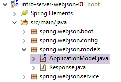 |
[ApplicationModel] 类如下所示：
package spring.webjson.models;
import java.util.List;
import org.springframework.beans.factory.annotation.Autowired;
import org.springframework.stereotype.Component;
import spring.data.dao.IDao;
import spring.data.entities.Categorie;
import spring.data.entities.Produit;
@Component
public class ApplicationModel implements IDao {
// the [DAO] layer
@Autowired
private IDao dao;
@Override
public void addProduits(List<Produit> produits) {
dao.addProduits(produits);
}
@Override
public void deleteAllProduits() {
dao.deleteAllProduits();
}
@Override
public void updateProduits(List<Produit> produits) {
dao.updateProduits(produits);
}
@Override
public List<Produit> getAllProduits() {
return dao.getAllProduits();
}
@Override
public void addCategories(List<Categorie> categories) {
dao.addCategories(categories);
}
@Override
public void deleteAllCategories() {
dao.deleteAllCategories();
}
@Override
public void updateCategories(List<Categorie> categories) {
dao.updateCategories(categories);
}
@Override
public List<Categorie> getAllCategories() {
return dao.getAllCategories();
}
@Override
public Produit getProduitByIdWithCategorie(Long idProduit) {
return dao.getProduitByIdWithCategorie(idProduit);
}
@Override
public Produit getProduitByNameWithCategorie(String nom) {
return dao.getProduitByNameWithCategorie(nom);
}
@Override
public Categorie getCategorieByIdWithProduits(Long idCategorie) {
return dao.getCategorieByIdWithProduits(idCategorie);
}
@Override
public Categorie getCategorieByNameWithProduits(String nom) {
return dao.getCategorieByNameWithProduits(nom);
}
@Override
public Produit getProduitByIdWithoutCategorie(Long idProduit) {
return dao.getProduitByIdWithoutCategorie(idProduit);
}
@Override
public Categorie getCategorieByIdWithoutProduits(Long idCategorie) {
return dao.getCategorieByIdWithoutProduits(idCategorie);
}
@Override
public Produit getProduitByNameWithoutCategorie(String nom) {
return dao.getProduitByNameWithoutCategorie(nom);
}
@Override
public Categorie getCategorieByNameWithoutProduits(String nom) {
return dao.getCategorieByNameWithoutProduits(nom);
}
}
- 第 12 行：该类是 Spring 的单例；
- 第 13 行：该类实现了 [DAO] 层的 [IDao] 接口；
- 第16–17行：将引用注入到[DAO]层；
- 第19–99行：实现 [IDao] 接口；
Web层的架构演变如下：
 |
- 在 [2b] 中，控制器（们）的方法与 [ApplicationModel] 单例进行通信；
该策略为潜在缓存的管理提供了灵活性。[ApplicationModel] 类可用于存储从 [DAO] 层获取的信息或配置数据。当您无法控制 [DAO] 层时，这会非常有用。该缓存策略可能会随着时间的推移而演变。更改不会对控制器（们）的代码产生影响。
13.5.5. 控制器
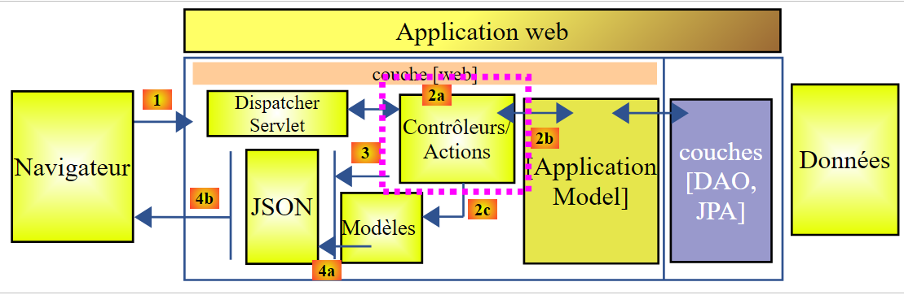 |
 |
这里只有一个控制器，即 [MyController] 类。
13.5.5.1. 公开的 URL
该控制器公开的 URL 如下：
| 将产品添加到数据库中。这些请求采用POST方式提交。响应是一个JSON字符串，其中包含已添加产品的列表及其主键。 |
| 从数据库中删除所有产品。 |
| 更新数据库中的产品。这些请求采用POST方式提交。响应是一个包含已更新产品列表的JSON字符串。 |
| 获取所有产品的 JSON 字符串。 |
| 将分类添加到数据库中。此操作采用 POST 请求。响应是一个 JSON 字符串，其中包含已添加分类的列表及其主键。如果分类包含产品，这些产品也会被添加到数据库中。 |
| 从数据库中删除所有分类及其下的所有产品。操作完成后，数据库将为空。 |
| 更新数据库中的分类。这些请求采用POST方式提交。响应内容为已更新分类的列表。如果分类包含商品，这些商品也会在数据库中相应更新。返回已修改分类的JSON字符串； |
| 获取所有分类的 JSON 字符串。 |
| 根据产品 ID 检索该产品的 JSON 字符串及其所属类别。 |
| 根据产品 ID 检索该产品的 JSON 字符串，不包含其类别。 |
| 根据产品名称检索该产品的 JSON 字符串及其所属类别。 |
| 根据产品名称（不包含其类别）检索该产品的 JSON 字符串。 |
| 根据类别 ID 检索该类别的 JSON 字符串及其关联的产品。 |
| 根据名称检索指定类别的 JSON 字符串及其关联的产品。 |
| 根据名称检索指定类别的 JSON 字符串，不包含其产品。 |
| 根据 ID 检索某类别的 JSON 字符串，不包含其产品。 |
公开的 URL 对应于 [DAO] 层中 [IDao] 接口的方法。Web 服务 / JSON 的方法均基于同一模型构建。我们将探讨其中几个。
13.5.5.2. 控制器骨架
控制器骨架如下：
package spring.webjson.service;
import java.util.ArrayList;
import java.util.List;
import java.util.Set;
import javax.servlet.http.HttpServletRequest;
import org.springframework.beans.factory.annotation.Autowired;
import org.springframework.beans.factory.annotation.Qualifier;
import org.springframework.stereotype.Controller;
import org.springframework.web.bind.annotation.PathVariable;
import org.springframework.web.bind.annotation.RequestMapping;
import org.springframework.web.bind.annotation.RequestMethod;
import org.springframework.web.bind.annotation.ResponseBody;
import com.fasterxml.jackson.core.JsonProcessingException;
import com.fasterxml.jackson.core.type.TypeReference;
import com.fasterxml.jackson.databind.ObjectMapper;
import com.google.common.io.CharStreams;
import spring.data.dao.DaoException;
import spring.data.entities.Categorie;
import spring.data.entities.Produit;
import spring.webjson.models.ApplicationModel;
import spring.webjson.models.Response;
@Controller
public class MyController {
// spring dependencies
@Autowired
private ApplicationModel application;
// filters jSON
@Autowired
@Qualifier("jsonMapper")
private ObjectMapper jsonMapper;
@Autowired
@Qualifier("jsonMapperCategorieWithProduits")
private ObjectMapper jsonMapperCategorieWithProduits;
@Autowired
@Qualifier("jsonMapperProduitWithCategorie")
private ObjectMapper jsonMapperProduitWithCategorie;
@Autowired
@Qualifier("jsonMapperCategorieWithoutProduits")
private ObjectMapper jsonMapperCategorieWithoutProduits;
@Autowired
@Qualifier("jsonMapperProduitWithoutCategorie")
private ObjectMapper jsonMapperProduitWithoutCategorie;
// class [MyController] is a singleton and is instantiated only once the bean
public MyController() {
// System.out.println("MyController");
}
@RequestMapping(value = "/addProduits", method = RequestMethod.POST, consumes = "application/json; charset=UTF-8", produces = "application/json; charset=UTF-8")
@ResponseBody
public String addProduits(HttpServletRequest request) throws JsonProcessingException {
...
}
- 第 28 行：[@Controller] 注解将该类标记为 Spring 组件；
- 第 32–33 行：注入对 [ApplicationModel] 类的引用；
- 第 36–50 行：注入 JSON 映射器的引用；
- 第 58 行：公开的 URL 为 [/addProducts]。客户端必须使用 [POST] 方法发起请求（method = RequestMethod.POST）。它必须将提交的值作为 JSON 字符串发送（content-type = "application/json; charset=UTF-8"）。 该方法本身会向客户端返回响应（第 59 行）。这将是一个字符串（第 60 行）。将向客户端发送 HTTP 头 [Content-type: application/json; charset=UTF-8]，以表明客户端将收到一个 JSON 字符串（第 58 行）；
- 第 60 行：[addProduits] 方法返回包含已添加到数据库的产品列表的 JSON 字符串；
13.5.5.3. 控制器方法的响应
所有控制器方法均返回以下 [Response] 类型：
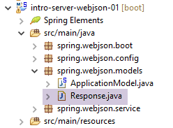 |
package spring.webjson.service;
import java.util.List;
public class Response<T> {
// ----------------- properties
// operation status
private int status;
// any error messages
private List<String> messages;
// the body of the reply
private T body;
// manufacturers
public Response() {
}
public Response(int status, List<String> messages, T body) {
this.status = status;
this.messages = messages;
this.body = body;
}
// getters and setters
...
}
- 第 5 行：响应封装了一个类型 T；
- 第 13 行：类型为 T 的响应；
- 第 9–11 行：方法可能会遇到异常。在这种情况下，它将返回一个包含以下内容的响应：
- 第 9 行：status!=0；
- 第 11 行：遇到的错误列表；
13.5.5.4. URL [/addProducts]
URL [/addProducts] 由以下方法处理：
@RequestMapping(value = "/addProduits", method = RequestMethod.POST, consumes = "application/json; charset=UTF-8", produces = "application/json; charset=UTF-8")
@ResponseBody
public String addProduits(HttpServletRequest request) throws JsonProcessingException {
// answer
Response<List<Produit>> response;
try {
// retrieve the posted value
String body = CharStreams.toString(request.getReader());
List<Produit> produits = jsonMapperProduitWithoutCategorie.readValue(body, new TypeReference<List<Produit>>() {
});
// we re-establish the link between products and categories
for (Produit produit : produits) {
produit.setCategorie(application.getCategorieByIdWithoutProduits(produit.getIdCategorie()));
}
// we persist products
application.addProduits(produits);
response = new Respon se<List<Produit>>(0, null, produits);
} catch (DaoException e1) {
response = new Response<List<Produit>>(1000, e1.getErreurs(), null);
} catch (Exception e2) {
response = new Response<List<Produit>>(1000, getErreursForException(e2), null);
}
// answer jSON
return jsonMapperProduitWithoutCategorie.writeValueAsString(response);
}
- 第 3 行：该方法将 [HttpServletRequest request] 作为参数，该参数封装了客户端请求的所有信息；
- 第 5 行：将发送给客户端的响应：一个产品列表；
- 第 8 行：我们获取提交的值。[CharStreams] 类属于 [Google Guava] 库，我们已在 [pom.xml] 文件中添加了该库的引用。我们获取客户端提交的 JSON 字符串。我们需要对其进行反序列化才能进行后续处理；
- 第 8–10 行：执行反序列化操作。我们得到一个产品列表，其中每个产品的 [category] 字段初始值为 null；
- 第 12–14 行：我们将列表中所有产品的 [category] 字段重置。为此，我们使用产品的 [categoryId] 字段，该字段已初始化；
- 第 16 行：将产品插入数据库；
- 第 17 行：使用产品列表初始化 [response] 对象；
- 第 18–19 行：处理方法在 [DAO] 层遇到异常的情况。我们将响应初始化为 [status=1000]（错误代码）[messages=e1.getMessages()]，即向客户端发送服务器端遇到的错误列表；
- 第 20–21 行：方法遇到其他类型异常的情况。我们使用 [status=1000]（错误代码）[messages=getErrorsForException(e)] 初始化响应，其中 [getErrorsForException] 是该类的私有方法，用于返回与 e 的异常堆栈中异常相关的错误列表，并且 [body=null]；
- 第 24 行：返回响应的 JSON 字符串；
13.5.5.5. URL [/getAllProducts]
URL [/getAllProducts] 由以下方法处理：
@RequestMapping(value = "/getAllProduits", method = RequestMethod.GET, produces = "application/json; charset=UTF-8")
@ResponseBody
public String getAllProduits() throws JsonProcessingException {
// answer
Response<List<Produit>> response;
try {
response = new Response<List<Produit>>(0, null, application.getAllProduits());
} catch (DaoException e1) {
response = new Response<List<Produit>>(1003, e1.getErreurs(), null);
} catch (Exception e2) {
response = new Response<List<Produit>>(1003, getErreursForException(e2), null);
}
// answer jSON
return jsonMapperProduitWithoutCategorie.writeValueAsString(response);
}
- 第 1 行：使用 [GET] 操作请求 URL [/getAllProduits]。它返回 JSON；
- 第 2 行：该方法将 JSON 响应发送给客户端；
- 第 5 行：该方法返回类型为 [Response<List<Product>>] 的 JSON 字符串；
- 第 7 行：请求的产品不包含其所属类别；
- 第 8–12 行：若发生错误，则使用错误代码和错误消息初始化响应；
- 第 14 行：将 JSON 响应发送给客户端；
13.5.5.6. 结论
本文将不再介绍该控制器中的其他方法。它们与我们刚刚介绍的两个方法中的一个相似。
13.5.6. Web 服务 / JSON 执行类
 |
[Boot] 类是该项目的可执行类：
package spring.webjson.boot;
import org.springframework.boot.SpringApplication;
import spring.webjson.server.config.AppConfig;
public class Boot {
public static void main(String[] args) {
SpringApplication.run(AppConfig.class, args);
}
}
- 第 10 行：执行静态方法 [SpringApplication.run]。[SpringApplication] 类是 [Spring Boot] 项目中的一个类（第 3 行）。向其传递了两个参数：
- [AppConfig.class]：用于配置整个应用程序的类；
- [args]：传递给第 9 行 [main] 方法的任何参数。此参数在此处未被使用；
执行该类时，会生成以下日志：
- 第 17-19 行：启动 Tomcat 服务器以运行 Web/JSON 服务；
- 第 25-33 行：构建 [DAO] 层；
- 第 32-51 行：发现已暴露的 URL；
13.5.7. Web 服务 / JSON 测试
为了执行测试，我们通过 SQL 脚本 [dbintrospringdata.sql] 生成 MySQL 数据库 [dbintrospringdata]：
 |
完成上述操作后，我们使用 [Advanced Rest Client]（参见第 22.5 节）来查询 Web 服务 / JSON 公开的 URL（Web 服务 / JSON 必须正在运行）。
 |
- 在[1-3]中，我们通过HTTP GET请求获取URL [/getAllCategories]；
我们收到以下响应：
 |
- 在 [1] 中，客户端的 HTTP 请求；
- 在 [2] 中，服务器的 HTTP 响应；
- 在 [3] 中，状态码 [200 OK] 表示服务器已成功处理该请求；
- 在 [4] 中，服务器的 JSON 响应；
完整的 JSON 响应如下：
{"status":0,"messages":null,"body":[{"id":415,"version":0,"nom":"categorie0","produits":[{"id":1849,"version":0,"nom":"produit00","idCategorie":415,"prix":100.0,"description":"desc00"},{"id":1850,"version":0,"nom":"produit01","idCategorie":415,"prix":101.0,"description":"desc01"},{"id":1851,"version":0,"nom":"produit02","idCategorie":415,"prix":102.0,"description":"desc02"},{"id":1852,"version":0,"nom":"produit03","idCategorie":415,"prix":103.0,"description":"desc03"},{"id":1853,"version":0,"nom":"produit04","idCategorie":415,"prix":104.0,"description":"desc04"}]},{"id":416,"version":0,"nom":"categorie1","produits":[{"id":1856,"version":0,"nom":"produit12","idCategorie":416,"prix":112.0,"description":"desc12"},{"id":1857,"version":0,"nom":"produit13","idCategorie":416,"prix":113.0,"description":"desc13"},{"id":1858,"version":0,"nom":"produit14","idCategorie":416,"prix":114.0,"description":"desc14"},{"id":1854,"version":0,"nom":"produit10","idCategorie":416,"prix":110.0,"description":"desc10"},{"id":1855,"version":0,"nom":"produit11","idCategorie":416,"prix":111.0,"description":"desc11"}]}]}
- status:0 表示没有服务器端错误；
- messages: null 表示没有错误信息；
- body：是响应正文，在此示例中为包含产品的分类列表。共有两个分类，每个分类下有 5 件产品；
我们将把商品 [product15] 添加到类别 [category1] 中。为此，我们将使用 URL [/addCategories]，其代码如下：
@RequestMapping(value = "/addCategories", method = RequestMethod.POST, consumes = "application/json; charset=UTF-8", produces = "application/json; charset=UTF-8")
@ResponseBody
public String addCategories(HttpServletRequest request) throws JsonProcessingException {
Response<List<Categorie>> response;
ObjectMapper mapper = context.getBean(ObjectMapper.class);
// we persist categories
try {
// retrieve the posted value
String body = CharStreams.toString(request.getReader());
mapper.setFilters(jsonFilterCategorieWithProduits);
List<Categorie> categories = mapper.readValue(body, new TypeReference<List<Categorie>>() {
});
// we re-establish the link between products and categories
for (Categorie categorie : categories) {
Set<Produit> produits = categorie.getProduits();
if (produits != null) {
for (Produit produit : categorie.getProduits()) {
produit.setCategorie(categorie);
}
}
}
// we persist categories
application.addCategories(categories);
response = new Response<List<Categorie>>(0, null, categories);
} catch (Exception e) {
response = new Response<List<Categorie>>(1004, getErreursForException(e), null);
}
// answer jSON
return mapper.writeValueAsString(response);
}
- 第 1 行：客户端必须发送 POST 请求，且提交的值必须是 JSON 字符串；
- 第 9–12 行：提交的值必须是包含各类别及其关联产品的列表；
我们将创建一个包含商品 [product21] 的分类 [category2]。此时需发送的 JSON 字符串如下：
[{"id":null,"version":0,"nom":"categorie2","produits":[{"id":null,"version":0,"nom":"produit21","idCategorie":null,"prix":111.0,"description":"desc21"}]}]
向 Web 服务 / JSON 发送请求的方式如下：
 |
- 在 [1] 中，请求的 URL；
- 在 [2] 中，通过 POST 操作进行请求；
- 在 [3] 中，是提交的 JSON 字符串；
- 在 [4] 中，告知服务器将发送 JSON 数据；
服务器的响应如下：
 |
- 在 [1] 中，我们可以看到“类别”及其“产品”现在都拥有主键，这表明它们很可能已被插入数据库。我们将通过访问 URL [/getCategorieByNameWithProduits/categorie2] 来验证这一点：
 |
我们得到以下结果：
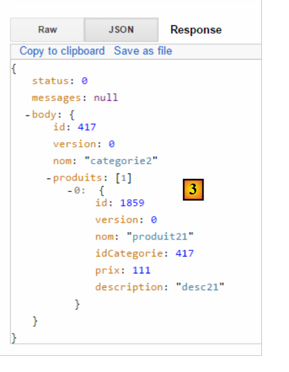 |
我们确实检索到了类别 [categorie2] 及其唯一的产品 [produit21]。我们也可以仅请求该产品。为此，请使用 URL [/getProduitByIdWithoutCategorie/1859]：
 |
我们得到以下结果：
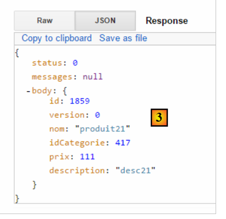 |
所有 [GET] 操作均可在标准网页浏览器中执行：
 |
欢迎读者测试该 Web 服务 / json 的其他 URL。
13.6. 为 /json Web 服务编写的客户端
既然 [dbintrospringdata] 数据库已在 Web 上提供，我们将编写一个使用该数据库的应用程序。届时我们将拥有以下客户端/服务器架构：
 |
客户端应用程序将包含两层：
- 一个 [DAO] [2] 层，用于与暴露数据库的 /json Web 应用程序进行通信；
- 一个 JUnit [1] 测试层，用于验证客户端和服务器是否运行正常；
13.6.1. Eclipse 项目
客户端的 Eclipse 项目如下：
 |
- [src/main/java] 文件夹实现了 [DAO] 层；
- [src/test/java] 文件夹实现 JUnit 测试；
13.6.2. Maven 项目配置
该项目是一个由以下 [pom.xml] 文件配置的 Maven 项目：
<project xmlns="http://maven.apache.org/POM/4.0.0" xmlns:xsi="http://www.w3.org/2001/XMLSchema-instance"
xsi:schemaLocation="http://maven.apache.org/POM/4.0.0 http://maven.apache.org/xsd/maven-4.0.0.xsd">
<modelVersion>4.0.0</modelVersion>
<groupId>istia.st.webjson</groupId>
<artifactId>intro-client-webjson-01</artifactId>
<version>0.0.1-SNAPSHOT</version>
<description>Client console du serveur web / jSON</description>
<properties>
<project.build.sourceEncoding>UTF-8</project.build.sourceEncoding>
<java.version>1.8</java.version>
</properties>
<parent>
<groupId>org.springframework.boot</groupId>
<artifactId>spring-boot-starter-parent</artifactId>
<version>1.2.7.RELEASE</version>
</parent>
<dependencies>
<!-- Spring -->
<dependency>
<groupId>org.springframework</groupId>
<artifactId>spring-web</artifactId>
</dependency>
<!-- jSON library used by Spring -->
<dependency>
<groupId>com.fasterxml.jackson.core</groupId>
<artifactId>jackson-core</artifactId>
</dependency>
<dependency>
<groupId>com.fasterxml.jackson.core</groupId>
<artifactId>jackson-databind</artifactId>
</dependency>
<!-- component used by Spring RestTemplate -->
<dependency>
<groupId>org.apache.httpcomponents</groupId>
<artifactId>httpclient</artifactId>
</dependency>
<!-- Google Guava -->
<dependency>
<groupId>com.google.guava</groupId>
<artifactId>guava</artifactId>
<version>16.0.1</version>
<scope>test</scope>
</dependency>
<!-- log library -->
<dependency>
<groupId>org.springframework.boot</groupId>
<artifactId>spring-boot-starter-logging</artifactId>
</dependency>
<!-- Spring Boot Test -->
<dependency>
<groupId>org.springframework.boot</groupId>
<artifactId>spring-boot-starter-test</artifactId>
<scope>test</scope>
</dependency>
<!-- Spring Boot -->
<dependency>
<groupId>org.springframework.boot</groupId>
<artifactId>spring-boot</artifactId>
<scope>test</scope>
</dependency>
</dependencies>
<!-- plugins -->
<build>
<plugins>
<plugin>
<artifactId>maven-assembly-plugin</artifactId>
<configuration>
<descriptorRefs>
<descriptorRef>jar-with-dependencies</descriptorRef>
</descriptorRefs>
</configuration>
</plugin>
<plugin>
<groupId>org.apache.maven.plugins</groupId>
<artifactId>maven-surefire-plugin</artifactId>
<version>2.18.1</version>
</plugin>
</plugins>
</build>
<name>intro-client-webjson-01</name>
</project>
- 第 14–18 行：父级 Maven 项目 [spring-boot-starter-parent]，它允许我们定义多个依赖项而无需指定其版本，因为这些版本已在父项目中定义；
- 第 22–25 行：尽管我们并非在编写 Web 应用程序，但仍需 [spring-web] 依赖项，其中包含 [RestTemplate] 类，该类可简化与 Web/JSON 应用程序的交互；
- 第 27–34 行：一个 JSON 库；
- 第 36–39 行：一个允许我们为客户端的 HTTP 请求设置超时的依赖项。超时是指等待服务器响应的最长时限。超过此时间后，客户端将通过抛出异常来触发超时错误；
- 第 41–46 行：JUnit 测试中使用的 Google Guava 库。因此，我们将其作用域设置为 [test]（第 45 行）。这意味着仅在执行 [src/test/java] 分支中的代码时，才会引入此依赖项；
- 第 48–51 行：日志记录库；
- 第 52–63 行：JUnit 测试的依赖项。具体来说，它包含了测试所需的 JUnit 4 库。这些依赖项带有 [<scope>test</scope>] 属性，表明它们仅在测试阶段需要。它们不会包含在最终的项目归档中；
13.6.3. [DAO] 层的实现
 |
 |
- [spring.client.config] 包包含 [DAO] 层的 Spring 配置；
- [spring.client.dao] 包包含 [DAO] 层的实现；
- [spring.client.entities] 包包含与 Web 服务/JSON 交换的对象；
13.6.3.1. 配置
 |
[DaoConfig] 类负责 [DAO] 层的 Spring 配置。其代码如下：
package spring.client.config;
import org.springframework.context.annotation.Bean;
import org.springframework.context.annotation.ComponentScan;
import org.springframework.context.annotation.Configuration;
import org.springframework.http.client.HttpComponentsClientHttpRequestFactory;
import org.springframework.web.client.RestTemplate;
import com.fasterxml.jackson.databind.ObjectMapper;
import com.fasterxml.jackson.databind.ser.impl.SimpleBeanPropertyFilter;
import com.fasterxml.jackson.databind.ser.impl.SimpleFilterProvider;
@ComponentScan({ "spring.client.dao" })
public class DaoConfig {
// constants
static private final int TIMEOUT = 1000;
static private final String URL_WEBJSON = "http://localhost:8080";
@Bean
public RestTemplate restTemplate(int timeout) {
// creation of the RestTemplate component
HttpComponentsClientHttpRequestFactory factory = new HttpComponentsClientHttpRequestFactory();
RestTemplate restTemplate = new RestTemplate(factory);
// exchange timeout
factory.setConnectTimeout(timeout);
factory.setReadTimeout(timeout);
// result
return restTemplate;
}
@Bean
public int timeout() {
return TIMEOUT;
}
@Bean
public String urlWebJson() {
return URL_WEBJSON;
}
// filters jSON
@Bean(name = "jsonMapper")
public ObjectMapper jsonMapper() {
return new ObjectMapper();
}
@Bean(name = "jsonMapperCategorieWithProduits")
public ObjectMapper jsonMapperCategorieWithProduits() {
// mapper jSON
ObjectMapper mapper = new ObjectMapper();
// filters
mapper.setFilters(
new SimpleFilterProvider().addFilter("jsonFilterCategorie", SimpleBeanPropertyFilter.serializeAllExcept())
.addFilter("jsonFilterProduit", SimpleBeanPropertyFilter.serializeAllExcept("categorie")));
// result
return mapper;
}
@Bean(name = "jsonMapperProduitWithCategorie")
public ObjectMapper jsonMapperProduitWithCategorie() {
// mapper jSON
ObjectMapper mapper = new ObjectMapper();
// filters
mapper.setFilters(
new SimpleFilterProvider().addFilter("jsonFilterProduit", SimpleBeanPropertyFilter.serializeAllExcept())
.addFilter("jsonFilterCategorie", SimpleBeanPropertyFilter.serializeAllExcept("produits")));
// result
return mapper;
}
@Bean(name = "jsonMapperCategorieWithoutProduits")
public ObjectMapper jsonMapperCategorieWithoutProduits() {
// mapper jSON
ObjectMapper mapper = new ObjectMapper();
// filters
mapper.setFilters(new SimpleFilterProvider().addFilter("jsonFilterCategorie",
SimpleBeanPropertyFilter.serializeAllExcept("produits")));
// result
return mapper;
}
@Bean(name = "jsonMapperProduitWithoutCategorie")
public ObjectMapper jsonMapperProduitWithoutCategorie() {
// mapper jSON
ObjectMapper mapper = new ObjectMapper();
// filters
mapper.setFilters(new SimpleFilterProvider().addFilter("jsonFilterProduit",
SimpleBeanPropertyFilter.serializeAllExcept("categorie")));
// result
return mapper;
}
}
- 第 13 行：该类是一个 Spring 配置类——Spring 组件位于 [spring.client.dao] 包中；
- 第 17 行：设置 1 秒（1000 毫秒）的超时；
- 第 32–35 行：返回此值的 Bean；
- 第 18 行：Web 服务 / JSON 的 URL；
- 第 37–40 行：返回此值的 Bean；
- 第 20–30 行：处理与 Web 服务 / JSON 通信的 [RestTemplate] 类的配置。当不需要配置时，可以在代码中通过简单的 [new RestTemplate()] 进行实例化。在此，我们希望设置与 Web 服务 / JSON 通信的超时时间。 第 36 行的 [timeout] Bean 作为参数传递给了第 24 行的 [RestTemplate] 方法；
- 第 23 行：[HttpComponentsClientHttpRequestFactory] 组件正是用于设置通信超时（第 29–30 行）的组件；
- 第 24 行：[RestTemplate] 类是使用该组件构建的。由于它依赖该组件与 Web 服务 / JSON 进行通信，因此通信确实会受超时限制；
- 客户端和服务器将交换文本行。 转换器负责将对象序列化为文本，反之亦将文本反序列化为对象。[RestTemplate] 类可能关联多个转换器，具体选用哪个取决于服务器发送的 HTTP 头部。在此示例中，我们将不使用转换器。因此，[RestTemplate] 组件不会以任何方式尝试转换以下两个元素：
- 提交的文本；
- 响应中接收到的文本；
这些文本将是 JSON 字符串，因此 [RestTemplate] 组件将保持其原样。我们将作为开发者，自行执行必要的 JSON 序列化和反序列化。这是因为应用于提交值和接收响应的过滤器可能不同，而且经验表明，自己处理比尝试配置 [RestTemplate] 组件以使用正确的 JSON 转换器要容易得多；
- 第 42–92 行：定义 JSON 过滤器。这些与第 13.5.3.1 节中介绍和解释的服务器端过滤器相同；
- 第 43–46 行：一个不带过滤器的 JSON 映射器；
- 第 64–68 行：一个用于检索类别（不包含其产品）的 JSON 映射器；
- 第 48–58 行：一个用于检索包含其产品的类别的 JSON 映射器；
- 第 83–92 行：一个用于检索不包含其所属类别的产品的 JSON 映射器；
- 第 60–70 行：一个用于检索包含其所属类别的产品的 JSON 映射器；
所有这些 Bean 都将可供 [DAO] 层代码以及 JUnit 测试使用。
13.6.3.2. 实体
 |
[DAO] 层处理的实体是其与 Web 服务/JSON 进行交互的对象。这些包括商品和产品。在服务器端，这些实体带有 JPA 持久化注解。在此，这些注解已被移除。我们再次列出实体代码以供参考：
[AbstractEntity]
package spring.client.entities;
import com.fasterxml.jackson.core.JsonProcessingException;
import com.fasterxml.jackson.databind.ObjectMapper;
public abstract class AbstractEntity {
// properties
protected Long id;
protected Long version;
// manufacturers
public AbstractEntity() {
}
public AbstractEntity(Long id, Long version) {
this.id = id;
this.version = version;
}
// redefine [equals] and [hashcode]
@Override
public int hashCode() {
return (id != null ? id.hashCode() : 0);
}
@Override
public boolean equals(Object entity) {
if (!(entity instanceof AbstractEntity)) {
return false;
}
String class1 = this.getClass().getName();
String class2 = entity.getClass().getName();
if (!class2.equals(class1)) {
return false;
}
AbstractEntity other = (AbstractEntity) entity;
return id != null && this.id == other.id.longValue();
}
// signature jSON
public String toString() {
ObjectMapper mapper = new ObjectMapper();
try {
return mapper.writeValueAsString(this);
} catch (JsonProcessingException e) {
e.printStackTrace();
return null;
}
}
// getters and setters
...
}
[分类]
package spring.client.entities;
import java.util.HashSet;
import java.util.Set;
import com.fasterxml.jackson.annotation.JsonFilter;
@JsonFilter("jsonFilterCategorie")
public class Categorie extends AbstractEntity {
// properties
private String nom;
// related products
public Set<Produit> produits = new HashSet<Produit>();
// manufacturers
public Categorie() {
}
public Categorie(String nom) {
this.nom = nom;
}
// methods
public void addProduit(Produit produit) {
// we add the product
produits.add(produit);
// set your category
produit.setCategorie(this);
}
// getters and setters
...
}
[Product]
package spring.webjson.client.entities;
import com.fasterxml.jackson.annotation.JsonFilter;
@JsonFilter("jsonFilterProduit")
public class Produit extends AbstractEntity {
// the name
private String nom;
// category number
private Long idCategorie;
// the price
private double prix;
// the description
private String description;
// the category
private Categorie categorie;
// manufacturers
public Produit() {
}
public Produit(String nom, double prix, String description) {
this.nom = nom;
this.prix = prix;
this.description = description;
}
// getters and setters
...
}
13.6.3.3. [DaoException] 类
 |
当 [DAO] 层遇到错误时，会抛出 [DaoException]。该类用于服务器端，具体说明见第 11.3.7 节。
13.6.3.4. [DAO] 层接口
 |
[DAO] 层实现了第 11.3.7 节中描述的 [IDao] 接口。
package spring.client.dao;
import java.util.List;
import spring.client.entities.Categorie;
import spring.client.entities.Produit;
public interface IDao {
// insert product list
public List<Produit> addProduits(List<Produit> produits);
// removal of all products
public void deleteAllProduits();
// product list update
public List<Produit> updateProduits(List<Produit> produits);
// all products obtained
public List<Produit> getAllProduits();
// inserting a list of categories
public List<Categorie> addCategories(List<Categorie> categories);
// delete all categories
public void deleteAllCategories();
// updating a list of categories
public List<Categorie> updateCategories(List<Categorie> categories);
// obtaining all categories
public List<Categorie> getAllCategories();
// a special product
public Produit getProduitByIdWithCategorie(Long idProduit);
public Produit getProduitByIdWithoutCategorie(Long idProduit);
public Produit getProduitByNameWithCategorie(String nom);
public Produit getProduitByNameWithoutCategorie(String nom);
// a special category
public Categorie getCategorieByIdWithProduits(Long idCategorie);
public Categorie getCategorieByIdWithoutProduits(Long idCategorie);
public Categorie getCategorieByNameWithProduits(String nom);
public Categorie getCategorieByNameWithoutProduits(String nom);
}
13.6.3.5. Web 服务 / JSON 响应
 |
我们已经看到，Web 服务 / JSON 的所有 URL 都会返回第 13.5.5.3 节中定义的 [Response] 类型。我们在此重现该类：
package spring.client.dao;
import java.util.List;
public class Response<T> {
// ----------------- properties
// operation status
private int status;
// any error messages
private List<String> messages;
// the body of the reply
private T body;
// manufacturers
public Response() {
}
public Response(int status, List<String> messages, T body) {
this.status = status;
this.messages = messages;
this.body = body;
}
// getters and setters
...
}
13.6.3.6. 实现与 Web 服务的通信 / JSON
 |
[ AbstractDao] 类实现了与 Web 服务 / JSON 的通信：
package spring.client.dao;
import java.net.URI;
import java.net.URISyntaxException;
import org.springframework.beans.factory.annotation.Autowired;
import org.springframework.core.ParameterizedTypeReference;
import org.springframework.http.MediaType;
import org.springframework.http.RequestEntity;
import org.springframework.web.client.RestTemplate;
public abstract class AbstractDao {
// data
@Autowired
protected RestTemplate restTemplate;
@Autowired
protected String urlServiceWebJson;
// generic request
protected String getResponse(String url, String jsonPost) {
// url : URL to contact
// jsonPost: the jSON value to be posted
try {
// request execution
RequestEntity<?> request;
if (jsonPost != null) {
// query POST
request = RequestEntity.post(new URI(String.format("%s%s", urlServiceWebJson, url)))
.header("Content-Type", "application/json").accept(MediaType.APPLICATION_JSON).body(jsonPost);
} else {
// query GET
request = RequestEntity.get(new URI(String.format("%s%s", urlServiceWebJson, url)))
.accept(MediaType.APPLICATION_JSON).build();
}
// execute the query
return restTemplate.exchange(request, new ParameterizedTypeReference<String>() {
}).getBody();
} catch (URISyntaxException e1) {
throw new DaoException(20, e1);
} catch (RuntimeException e2) {
throw new DaoException(21, e2);
}
}
}
- 第 15-16 行：注入 [RestTemplate] 组件，该组件负责与服务器的通信；
- 第17-18行：注入Web服务URL / JSON；
与服务器通信的方法实现被封装到了 [getResponse] 方法中：
- 第 21 行：该方法接收 2 个参数：
- [url]：请求的 URL；
- [jsonPost]：要提交的 JSON 字符串，否则为 null。如果 [jsonPost == null]，则使用 GET 方法发送 URL 请求；否则，使用 POST 方法；
- 第 38 行：该语句用于向服务器发送请求并接收响应。[RestTemplate] 组件提供了多种与服务器交互的方法。此处我们选择了 [exchange] 方法，但还有其他方法可用；
- 第 27–36 行：我们需要构建 [RequestEntity] 请求。其构建方式取决于使用 GET 还是 POST 请求；
- 第 30–31 行：GET 请求的构建。[RequestEntity] 类提供了静态方法来创建 GET、POST、HEAD 及其他请求。[RequestEntity.get] 方法允许您通过链式调用各种构建方法来创建 GET 请求：
- [RequestEntity.get] 方法将目标 URL 作为 URI 实例形式的参数传入，
- [accept] 方法允许您定义 [Accept] HTTP 头中的元素。在此，我们指定接受服务器将发送的 [application/json] 类型；
- [build] 方法利用这些信息构建请求的 [RequestEntity] 类型；
- 第 34–35 行：POST 请求。[RequestEntity.post] 方法通过串联构建请求的各种方法来创建 POST 请求：
- [RequestEntity.post] 方法将目标 URL 作为 URI 实例形式的参数接收，
- [header] 方法用于定义一个 HTTP 头部。在此，我们向服务器发送 [Content-Type: application/json] 头部，以表明提交的数据将以 JSON 字符串的形式到达；
- [accept] 方法允许我们表明接受服务器将发送的 [application/json] 类型；
- [body] 方法设置提交的值。这是泛型 [getResponse] 方法（第 1 行）的第四个参数；
- 第 38 行：[RestTemplate].exchange 方法返回 [ResponseEntity<String>] 类型，该类型封装了整个服务器响应：包括 HTTP 头部和文档正文。[ResponseEntity].getBody() 方法获取该正文，它代表服务器的响应——在本例中，是一个字符串；
13.6.3.7. [IDao] 接口的实现
 |
[Dao] 类实现了 [IDao] 接口：
package spring.client.dao;
import java.io.IOException;
import java.util.List;
import org.springframework.beans.factory.annotation.Autowired;
import org.springframework.beans.factory.annotation.Qualifier;
import org.springframework.context.ApplicationContext;
import org.springframework.stereotype.Component;
import com.fasterxml.jackson.core.type.TypeReference;
import com.fasterxml.jackson.databind.ObjectMapper;
import spring.client.entities.Categorie;
import spring.client.entities.Produit;
@Component
public class Dao extends AbstractDao implements IDao {
@Autowired
private ApplicationContext context;
// filters jSON
@Autowired
@Qualifier("jsonMapper")
private ObjectMapper jsonMapper;
@Autowired
@Qualifier("jsonMapperCategorieWithProduits")
private ObjectMapper jsonMapperCategorieWithProduits;
@Autowired
@Qualifier("jsonMapperProduitWithCategorie")
private ObjectMapper jsonMapperProduitWithCategorie;
@Autowired
@Qualifier("jsonMapperCategorieWithoutProduits")
private ObjectMapper jsonMapperCategorieWithoutProduits;
@Autowired
@Qualifier("jsonMapperProduitWithoutCategorie")
private ObjectMapper jsonMapperProduitWithoutCategorie;
@Override
public List<Produit> addProduits(List<Produit> produits) {
// ----------- add products (without category)
...
}
- 第 17 行：[Dao] 类是一个 Spring 组件，其他 Spring 组件可以注入其中；
- 第 18 行：[Dao] 类继承了我们刚才看到的 [AbstractDao] 类，并实现了 [IDao] 接口；
- 第 20–21 行：我们注入 Spring 上下文以访问其中的 Bean；
- 第 24–38 行：注入第 13.6.2 节中介绍的 [AppConfig] 类中定义的 JSON 映射器；
[IDao] 接口中各种方法的实现都遵循相同的模式。我们将介绍两个方法，一个基于 [POST] 操作，另一个基于 [GET] 操作。
[GET] 示例：[getCategorieByNameWithProduits]
@Override
public Categorie getCategorieByNameWithProduits(String nom) {
// ----------- obtain a category designated by its name, with its products
try {
// request
Response<Categorie> response = jsonMapperCategorieWithProduits.readValue(
getResponse(String.format("/getCategorieByNameWithProduits/%s", nom), null),
new TypeReference<Response<Categorie>>() {
});
// mistake?
if (response.getStatus() != 0) {
// 1 exception is thrown
throw new DaoException(response.getStatus(), response.getMessages());
} else {
// render the core of the server response
return response.getBody();
}
} catch (DaoException e1) {
throw e1;
} catch (RuntimeException | IOException e2) {
throw new DaoException(113, e2);
}
}
- 第 7 行：调用父类的 [getResponse] 方法。该方法负责处理与 Web 服务/JSON 的通信。其参数如下：
getResponse(String.format("/getCategorieByNameWithProduits/%s", nom), null)
- （续）
- 被查询服务的 URL [/getCategoryByNameWithProducts/name]；
- 提交的值。此处无值；
[getResponse] 方法返回一个字符串，表示服务器发送的 JSON 响应。我们按以下方式对该 JSON 响应进行反序列化：
jsonMapperCategorieWithProduits.readValue(
jsonResponse,
new TypeReference<Response<Categorie>>() {
});
因为该 JSON 字符串是 [Response<Category>] 类型的序列化结果；
- 第 11–17 行：我们检查响应状态。如果状态不为 0，则表示发生了服务器端错误。随后我们抛出一个异常（第 13 行），并利用响应中包含的信息（状态码和错误消息列表）；
- 第 16 行：如果没有发生服务器端错误，则返回类型为 [Response<Category>] 的响应主体，即请求的类别；
- 第 18–19 行：处理第 16 行抛出的异常；
- 第 20–22 行：处理所有其他异常；
[POST] 示例：[addCategories]
@Override
public List<Categorie> addCategories(List<Categorie> categories) {
// ----------- add categories (with their products)
try {
// request
Response<List<Categorie>> response = jsonMapperCategorieWithProduits.readValue(
getResponse("/addCategories", jsonMapperCategorieWithProduits.writeValueAsString(categories)),
new TypeReference<Response<List<Categorie>>>() {
});
// mistake?
if (response.getStatus() != 0) {
// 1 exception is thrown
throw new DaoException(response.getStatus(), response.getMessages());
} else {
// render the core of the server response
return response.getBody();
}
} catch (DaoException e1) {
throw e1;
} catch (RuntimeException | IOException e2) {
throw new DaoException(104, e2);
}
}
- 第 2 行：使用 [addCategories] 方法将作为参数传递的类别持久化到数据库中。该方法返回这些类别，并为其添加主键。如果类别与产品一起传递，产品也会被持久化；
- 第 7 行：调用父类的 [getResponse] 方法来处理与 Web 服务 / JSON 的通信；
- 第一个参数是 URL [/addCategories]；
- 第二个参数是提交的值，在本例中即待保存的类别列表；
getResponse("/addCategories", jsonMapperCategorieWithProduits.writeValueAsString(categories))
随后将生成的 JSON 字符串反序列化，以获取预期的 [Response<List<Category>] 类型：
Response<List<Categorie>> response = jsonMapperCategorieWithProduits.readValue(
jsonResponse,
new TypeReference<Response<List<Categorie>>>() {
});
- 第 11–17 行：处理服务器响应（无论是否出错）；
- 第 20–22 行：异常处理；
所有其他方法均遵循上述两个方法的模式。
13.6.4. JUnit 测试
让我们回到当前正在开发的客户端/服务器架构：
 |
我们构建了一个与 [DAO] 层 [4] 具有相同接口的 [DAO] 层 [2]。因此，为了测试 [DAO] 层 [2]，我们可以使用之前用于测试 [DAO] 层 [4] 的 JUnit 测试。作为提醒，该测试如下所示：
 |
package spring.client.junit;
import java.util.ArrayList;
import java.util.List;
import java.util.Set;
import org.junit.Assert;
import org.junit.Before;
import org.junit.Test;
import org.junit.runner.RunWith;
import org.springframework.beans.BeansException;
import org.springframework.beans.factory.annotation.Autowired;
import org.springframework.beans.factory.annotation.Qualifier;
import org.springframework.boot.test.SpringApplicationConfiguration;
import org.springframework.test.context.junit4.SpringJUnit4ClassRunner;
import com.fasterxml.jackson.core.JsonProcessingException;
import com.fasterxml.jackson.databind.ObjectMapper;
import com.google.common.collect.Lists;
import spring.client.config.DaoConfig;
import spring.client.dao.DaoException;
import spring.client.dao.IDao;
import spring.client.entities.Categorie;
import spring.client.entities.Produit;
@SpringApplicationConfiguration(classes = DaoConfig.class)
@RunWith(SpringJUnit4ClassRunner.class)
public class Test01 {
// layer [DAO]
@Autowired
private IDao dao;
// filters jSON
@Autowired
@Qualifier("jsonMapper")
private ObjectMapper jsonMapper;
@Autowired
@Qualifier("jsonMapperCategorieWithProduits")
private ObjectMapper jsonMapperCategorieWithProduits;
@Autowired
@Qualifier("jsonMapperProduitWithCategorie")
private ObjectMapper jsonMapperProduitWithCategorie;
@Autowired
@Qualifier("jsonMapperCategorieWithoutProduits")
private ObjectMapper jsonMapperCategorieWithoutProduits;
@Autowired
@Qualifier("jsonMapperProduitWithoutCategorie")
private ObjectMapper jsonMapperProduitWithoutCategorie;
@Before
public void cleanAndFill() {
// the base is cleaned before each test
log("Vidage de la base de données", 1);
// table [CATEGORIES] is emptied - by cascade, table [PRODUITS] will be emptied
dao.deleteAllCategories();
// --------------------------------------------------------------------------------------
log("Remplissage de la base", 1);
// fill the tables
List<Categorie> categories = new ArrayList<Categorie>();
for (int i = 0; i < 2; i++) {
Categorie categorie = new Categorie(String.format("categorie%d", i));
for (int j = 0; j < 5; j++) {
categorie.addProduit(new Produit(String.format("produit%d%d", i, j), 100 * (1 + (double) (i * 10 + j) / 100),
String.format("desc%d%d", i, j)));
}
categories.add(categorie);
}
// add the category - the products will be cascaded in as well
categories = dao.addCategories(categories);
}
@Test
public void showDataBase() throws BeansException, JsonProcessingException {
// list of categories
log("Liste des catégories", 2);
List<Categorie> categories = dao.getAllCategories();
affiche(categories, jsonMapperCategorieWithoutProduits);
// product list
log("Liste des produits", 2);
List<Produit> produits = dao.getAllProduits();
affiche(produits, jsonMapperProduitWithoutCategorie);
// a few checks
Assert.assertEquals(2, categories.size());
Assert.assertEquals(10, produits.size());
Categorie categorie = findCategorieByName("categorie0", categories);
Assert.assertNotNull(categorie);
Produit produit = findProduitByName("produit03", produits);
Assert.assertNotNull(produit);
Long idCategorie = produit.getIdCategorie();
Assert.assertEquals(categorie.getId(), idCategorie);
}
@Test
public void getCategorieByNameWithProduits() {
log("getCategorieByNameWithProduits", 1);
Categorie categorie1 = dao.getCategorieByNameWithProduits("categorie1");
Assert.assertNotNull(categorie1);
Assert.assertEquals(5, categorie1.getProduits().size());
}
@Test
public void getCategorieByNameWithoutProduits() {
log("getCategorieByNameWithoutProduits", 1);
Categorie categorie1 = dao.getCategorieByNameWithoutProduits("categorie1");
Assert.assertNotNull(categorie1);
Assert.assertEquals("categorie1", categorie1.getNom());
}
@Test
public void getCategorieByIdWithProduits() {
log("getCategorieByIdWithProduits", 1);
Categorie categorie1 = dao.getCategorieByNameWithProduits("categorie1");
Categorie categorie2 = dao.getCategorieByIdWithProduits(categorie1.getId());
Assert.assertNotNull(categorie2);
Assert.assertEquals(categorie1.getId(), categorie2.getId());
Assert.assertEquals(categorie1.getNom(), categorie2.getNom());
}
@Test
public void getCategorieByIdWithoutProduits() {
log("getCategorieByIdWithoutProduits", 1);
Categorie categorie1 = dao.getCategorieByNameWithProduits("categorie1");
Categorie categorie2 = dao.getCategorieByIdWithoutProduits(categorie1.getId());
Assert.assertNotNull(categorie2);
Assert.assertEquals(categorie1.getNom(), categorie2.getNom());
}
@Test
public void getProduitByNameWithCategorie() {
log("getProduitByNameWithCategorie", 1);
Produit produit = dao.getProduitByNameWithCategorie("produit03");
Assert.assertNotNull(produit);
Assert.assertNotNull(produit.getCategorie());
}
@Test
public void getProduitByNameWithoutCategorie() {
log("getProduitByNameWithoutCategorie", 1);
Produit produit = dao.getProduitByNameWithoutCategorie("produit03");
Assert.assertNotNull(produit);
Assert.assertEquals("produit03", produit.getNom());
}
@Test
public void getProduitByIdWithCategorie() {
log("getProduitByNameWithCategorie", 1);
Produit produit = dao.getProduitByNameWithCategorie("produit03");
Produit produit2 = dao.getProduitByIdWithCategorie(produit.getId());
Assert.assertNotNull(produit2);
Assert.assertEquals(produit2.getNom(), produit.getNom());
Assert.assertEquals(produit2.getId(), produit.getId());
Assert.assertEquals(produit.getCategorie().getId(), produit2.getCategorie().getId());
}
@Test
public void getProduitByIdWithoutCategorie() {
log("getProduitByIdWithoutCategorie", 1);
Produit produit = dao.getProduitByNameWithCategorie("produit03");
Produit produit2 = dao.getProduitByIdWithoutCategorie(produit.getId());
Assert.assertNotNull(produit2);
Assert.assertEquals(produit2.getNom(), produit.getNom());
Assert.assertEquals(produit2.getId(), produit.getId());
}
@Test
public void doInsertsInTransaction() {
log("Ajout d'une catégorie [cat1] avec deux produits de même nom", 1);
// we insert
Categorie categorie = new Categorie("cat1");
categorie.addProduit(new Produit("x", 1.0, ""));
categorie.addProduit(new Produit("x", 1.0, ""));
// add the category - the products will be cascaded in as well
try {
categorie = dao.addCategories(Lists.newArrayList(categorie)).get(0);
} catch (DaoException e) {
show("Les erreurs suivantes se sont produites :", e.getErreurs());
}
// checks
List<Categorie> categories = dao.getAllCategories();
Assert.assertEquals(2, categories.size());
List<Produit> produits = dao.getAllProduits();
Assert.assertEquals(10, produits.size());
}
@Test
public void updateDataBase() {
log("Mise à jour du prix des produits de [categorie1]", 1);
Categorie categorie1 = dao.getCategorieByNameWithProduits("categorie1");
Categorie categorie1Saved = dao.getCategorieByNameWithProduits("categorie1");
Set<Produit> produits = categorie1.getProduits();
for (Produit produit : produits) {
produit.setPrix(1.1 * produit.getPrix());
}
List<Produit> produits2 = Lists.newArrayList(produits);
produits2 = dao.updateProduits(produits2);
// checks
List<Produit> produitsSaved = Lists.newArrayList(categorie1Saved.getProduits());
for (Produit produit2 : produits2) {
Produit produit = findProduitByName(produit2.getNom(), produitsSaved);
Assert.assertEquals(produit2.getPrix(), produit.getPrix() * 1.1, 1e-6);
}
}
@Test
public void addProduits() throws BeansException, JsonProcessingException {
log("Ajout de deux produits de catégorie [categorie0]", 1);
Categorie categorie0 = dao.getCategorieByNameWithoutProduits("categorie0");
Long idCategorie = categorie0.getId();
Produit p1 = new Produit("x", 1, "");
p1.setIdCategorie(idCategorie);
p1.setCategorie(categorie0);
Produit p2 = new Produit("y", 1, "");
p2.setIdCategorie(idCategorie);
p2.setCategorie(categorie0);
List<Produit> produits = new ArrayList<Produit>();
produits.add(p1);
produits.add(p2);
produits = dao.addProduits(produits);
// check
affiche(produits, jsonMapperProduitWithoutCategorie);
}
// -------------- private methods
private Produit findProduitByName(String nom, List<Produit> produits) {
for (Produit produit : produits) {
if (produit.getNom().equals(nom)) {
return produit;
}
}
return null;
}
private Categorie findCategorieByName(String nom, List<Categorie> categories) {
for (Categorie categorie : categories) {
if (categorie.getNom().equals(nom)) {
return categorie;
}
}
return null;
}
// display of a T-type element
static private <T> void affiche(T element, ObjectMapper jsonMapper) throws JsonProcessingException {
System.out.println(jsonMapper.writeValueAsString(element));
}
// display a list of elements of type T
static private <T> void affiche(List<T> elements, ObjectMapper jsonMapper) throws JsonProcessingException {
for (T element : elements) {
affiche(element, jsonMapper);
}
}
private static void log(String message, int mode) {
// poster message
String toPrint = null;
switch (mode) {
case 1:
toPrint = String.format("%s --------------------------------", message);
break;
case 2:
toPrint = String.format("-- %s", message);
break;
}
System.out.println(toPrint);
}
private static void show(String title, List<String> messages) {
// title
System.out.println(String.format("%s : ", title));
// messages
for (String message : messages) {
System.out.println(String.format("- %s", message));
}
}
}
它执行成功，并在控制台上输出以下结果：
Vidage de la base de données --------------------------------
Remplissage de la base --------------------------------
Ajout de deux produits de catégorie [categorie0] --------------------------------
{"id":6285,"version":0,"nom":"x","idCategorie":1319,"prix":1.0,"description":""}
{"id":6286,"version":0,"nom":"y","idCategorie":1319,"prix":1.0,"description":""}
Vidage de la base de données --------------------------------
Remplissage de la base --------------------------------
Mise à jour du prix des produits de [categorie1] --------------------------------
Vidage de la base de données --------------------------------
Remplissage de la base --------------------------------
getCategorieByIdWithoutProduits --------------------------------
Vidage de la base de données --------------------------------
Remplissage de la base --------------------------------
getProduitByNameWithoutCategorie --------------------------------
Vidage de la base de données --------------------------------
Remplissage de la base --------------------------------
getCategorieByNameWithProduits --------------------------------
Vidage de la base de données --------------------------------
Remplissage de la base --------------------------------
getCategorieByNameWithoutProduits --------------------------------
Vidage de la base de données --------------------------------
Remplissage de la base --------------------------------
getProduitByNameWithCategorie --------------------------------
Vidage de la base de données --------------------------------
Remplissage de la base --------------------------------
getProduitByNameWithCategorie --------------------------------
Vidage de la base de données --------------------------------
Remplissage de la base --------------------------------
getProduitByIdWithoutCategorie --------------------------------
Vidage de la base de données --------------------------------
Remplissage de la base --------------------------------
-- Liste des catégories
{"id":1337,"version":0,"nom":"categorie0"}
{"id":1338,"version":0,"nom":"categorie1"}
-- Liste des produits
{"id":6367,"version":0,"nom":"produit00","idCategorie":1337,"prix":100.0,"description":"desc00"}
{"id":6368,"version":0,"nom":"produit01","idCategorie":1337,"prix":101.0,"description":"desc01"}
{"id":6369,"version":0,"nom":"produit02","idCategorie":1337,"prix":102.0,"description":"desc02"}
{"id":6370,"version":0,"nom":"produit03","idCategorie":1337,"prix":103.0,"description":"desc03"}
{"id":6371,"version":0,"nom":"produit04","idCategorie":1337,"prix":104.0,"description":"desc04"}
{"id":6372,"version":0,"nom":"produit10","idCategorie":1338,"prix":110.0,"description":"desc10"}
{"id":6373,"version":0,"nom":"produit11","idCategorie":1338,"prix":111.0,"description":"desc11"}
{"id":6374,"version":0,"nom":"produit12","idCategorie":1338,"prix":112.0,"description":"desc12"}
{"id":6375,"version":0,"nom":"produit13","idCategorie":1338,"prix":113.0,"description":"desc13"}
{"id":6376,"version":0,"nom":"produit14","idCategorie":1338,"prix":114.0,"description":"desc14"}
Vidage de la base de données --------------------------------
Remplissage de la base --------------------------------
getCategorieByIdWithProduits --------------------------------
Vidage de la base de données --------------------------------
Remplissage de la base --------------------------------
Ajout d'une catégorie [cat1] avec deux produits de même nom --------------------------------
Les erreurs suivantes se sont produites :
- org.hibernate.exception.ConstraintViolationException: could not execute statement
- could not execute statement
- Duplicate entry 'x' for key 'NOM'
11:24:37.650 [Thread-1] INFO o.s.c.a.AnnotationConfigApplicationContext - Closing org.springframework.context.annotation.AnnotationConfigApplicationContext@f8c1ddd: startup date [Fri Nov 20 11:24:34 CET 2015]; root of context hierarchy